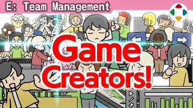
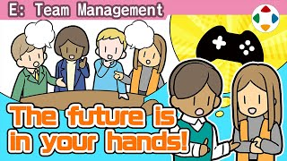
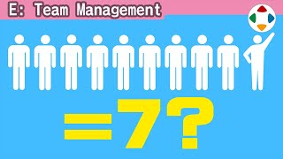
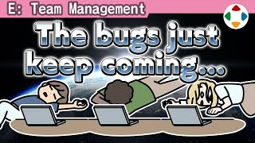
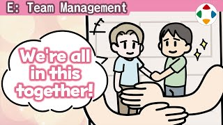
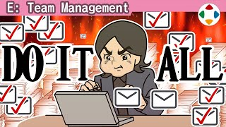
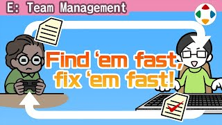
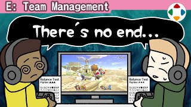
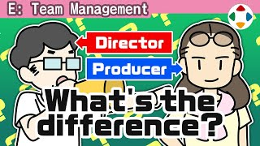

首页 / E 团队管理
- #13:20
团队内的信息共享
Sharing Info Within a Team大型游戏里每个人容易看不清自己在做什么。樱井用三招让团队通风：内部开发进度页面（带评论栏）、每日一张开发截图、每隔几个月的成果发表会。

#27:05游戏开发的职种
Jobs in Game Development以樱井常见的制作体制为例，介绍游戏开发的各个职种：总监、策划、程序、模型、原画、动作、特效、声音、UI、技术支援、管理、监测、调试、实机影片。团队由多职种混合，靠总监监修与相互理解协作推进。

#33:40有想法别憋着
Don't Wait to Speak Your Mind对规格或团队运营有不满时，最糟的是在团队里不说、做完后才「其实我当时这么想」。开发中的成员处在能改善的有利位置：及时向该说的人表达，并把否定和改善案配成一套。

#42:47十个人只能做出七个人的工作
Ten People Can Produce Seven People's Work「10 人团队能做 10 人份的工作」并不完全正确：视情况而定，但 10 人一般只能产出约 7 人份——因为要花时间在管理上。需要有人管理工作量、对外沟通、监修方向；优秀的人转做「大脑」会损失其产出。团队越大越需要管理，统一认识也越费时；推荐各小组成果发表会。
 #53:37
#53:37向所有人一次讲清
Explain Ideas to Everyone at Once《新·光神话》开发中，总监→策划→程序的转述常常让结果南辕北辙。从《大乱斗 3DS/Wii U》起，樱井改为监修时让该要素的所有相关成员一起听：占用时间看似浪费，但大家理解更深、方向一致、团队更通风。
- #64:23
写日报的建议
Daily Report Suggestions从《大乱斗X》前后起，樱井每个工作日都在团队内写日报：顶部一张截图 + 3～5 个话题。好处：让团队认识「外来者」的他、比邮件更能传达信息、锻炼自己的输出、每天给团队小刺激、确认进度。

#74:27调试永无止境
Bug Testing Never Ends不是「反正之后在线修」，谁都想一开始就完美——问题是现代游戏规模大到单纯调试消灭不尽。《大乱斗》光斗士对斗士就约 8000 种组合，再乘招式、时机、道具、人数、场地、命魂……是天文数字。抓投、终极必杀、地形、命魂尤其易出 bug；修一个又要重新检查大量内容。

#83:40在公司里做游戏
Making Games as Part of a Company公司里做游戏：工资有保障但不随销量成比例。销量两极化，卖不好很难归咎于某个人；即便如此员工工资仍有保障，责任在公司。公司分散风险与回报，让人专注所长——别有「被迫工作」的意识，互相支撑。

#93:03当天的事当天做完
Finish Everything Within the Day樱井监修团队内的大量工作：监修委托用邮件，按到达顺序先到先得，无论堆多少都当天回完、手上不积压未读。他的回复时间就是别人的等待时间；同时建议设定「不监修时间」确保自己的工作。
- #102:31
别把决定往后推
Don’t Put Decisions Off开会定不下来就「带回去研究」——请别这样。有判断权的人在场就当场决断。总监的判断是命运分岔口，等待中的案件会悬空；判断需要正确的信息，也要保持弹性，发现错误就再判断、细小多次地修正轨道。

#114:20调试体制
Bug Testing Systems找出并消灭 bug 的调试体制每款游戏都需要。流程：统一 ROM 版本 → 按规格书穷举、分区检查并建检查清单 → 复现后写成工单 → 管理者评级（S 卡死/存档损坏、A 阻碍进行）并分配 → 修复后回到调试员确认 → 完成状态保存。还有电脑自动测试、全球接力调试；而修 bug 可能引入新 bug。

#123:32测试游玩永不停歇
Play Testing Keeps Going《大乱斗》的平衡由比开发者更专业的监测组持续对战得出。DX 以前樱井独自调参数；X 开始加入约 4 名测试者；SP 时监测组人数和实力大增，并可参考线上与大赛数据。樱井重视个性，只在个性快被扼杀时插嘴。

#134:04总监与制作人
Directors and Producers总监（Director）是「监督」，掌握游戏内容几乎全部判断权，通常一队一人；制作人（Producer）负责团队管理、资金、人员配置、宣传，计算成本收益，从全公司俯瞰项目。界线因公司而异，但目标都是做出好作品。
- #142:10
小学生测试员
Elementary School Play Testers樱井以前很有效的方法：请员工的孩子、亲戚和他们的朋友来玩开发中的游戏，准备零食、营造游乐场气氛，观察真实反应。员工也很开心。如今因 SNS 时代的保密与安全考虑难以举办，但条件允许就值得做。
 #152:23
#152:23总监的工作是「削减」
A Director’s Job is to TrimDirection 意为方向，总监定方向、做各种决策。遇到机能极限、延期、工作量膨胀时，要预见损失、扔掉太重或会起火的货物、修正航线——总监既是做的人，也是切掉多余的人。为此需要尽早获得准确信息，困难也要及时说。